00 — Final Quality Pipeline
Who Needs Another Render Setup?
Fair. Mine measures your scene first.
It finds how many samples and bounces your scene needs, then builds the denoise for the final render.
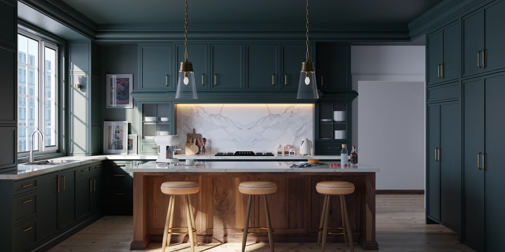
- Blender 5.1 / 5.2
- Cycles only
- Version 1.3.0
Nobody needs another render setup. I made one anyway, because every bounce count and noise threshold I had ever copied was measured on someone else’s scene. Possibly a donut.
FQP renders your scene, measures it, and tells you what is enough. When it can’t tell, it says that too. Cycles only, Blender 5.1 and 5.2.
01 — Analyzer
It measures, so you don’t have to guess
Blender’s factory bounce values are the same for every scene: a product shot, a forest, a cloud. FQP’s two analyzers render your saved .blend in a separate Blender (so save first) and report what it needs. They never save over your file.
Light Path Analyzer: two answers, and you pick
Press Analyze Light Paths. It renders one reference with everything turned up, then turns one bounce setting down at a time (diffuse, glossy, transmission, transparent, volume) and compares, on small test images. For each one it finds two values:
- Strict: where the raw, un-denoised render stops differing from the reference, by the numbers.
- Visual: where the denoised picture is too close to the reference to matter when you flip between the two.
Visual is never higher than Strict. Each set is rendered once more together, and the report says when it didn’t hold. Then two buttons, Apply Strict and Apply Visual. No default: you pick, and it asks before it writes.
The report answers three questions:
- What do I get? Both values for every bounce type.
- Where is the difference? Where in the frame the step below still differs, in words and as a small picture. Look there and decide.
- What does it cost? Whether the higher setting took noticeably longer on the test images: a rough level, not your final render time.
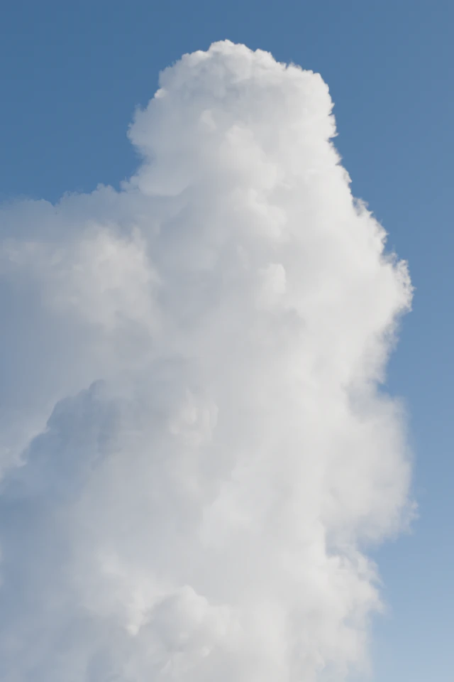
Selected · 48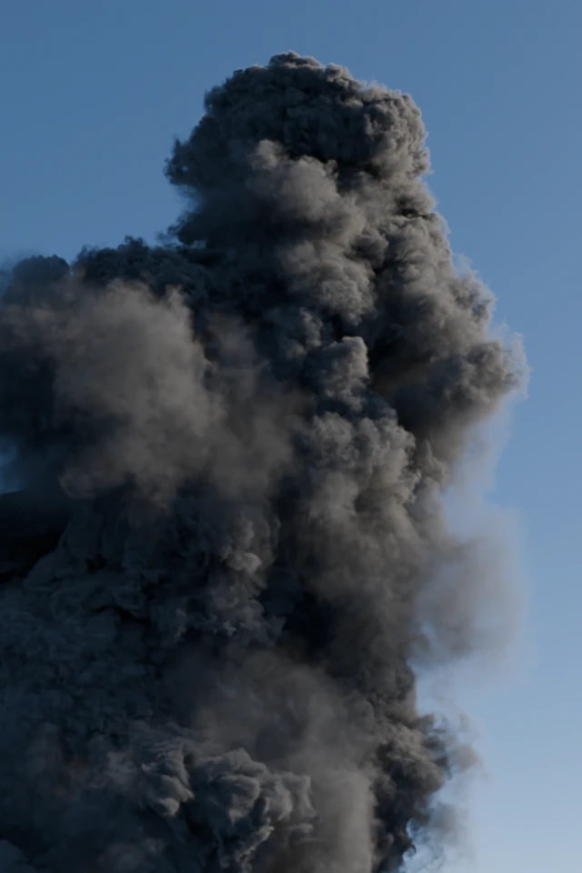
Default · 0Flipping is how the Visual value was calibrated.
Cloud · Camera · 640×960 · 256 samples · One scene, measured once. It stands for that scene only.
Two measured examples, each standing for that one scene only. On a cloud, where Blender’s factory Volume is 0, the scene settled only at 48. On a foliage scene, where factory Transparent is 8, Visual came out at 16 and Strict at 24.
The honest part: Visual was calibrated on one trained observer (me), on still images, flipping against the reference. Animation was not part of it. And when the analyzer is not sure, it does not lower your setting.
… TRANSPARENT (scene.cycles.transparent_max_bounces, reference render used 64) … bounces | rel.RMSE | tm.RMSE | p99(tm) | secs | note --------+------------+------------+------------+--------+------------- 0 | 48.199169 | 0.923716 | 3.692803 | 0.3 | 4 | 48.193044 | 0.236239 | 1.023034 | 0.4 | 8 | 48.191827 | 0.061889 | 0.119832 | 0.5 | 16 | 0.000661 | 0.001112 | 0.000001 | 0.6 | <== knee 24 | 0.000082 | 0.000139 | 0.000001 | 0.6 | <== recommended (escalated) … visual check (display values after OIDN denoise, dE2000 vs reference 64, blur 1 px) bounces | dE p99 | dE>2 % | note 0 | 33.240 | 94.447 | 4 | 10.417 | 48.173 | 8 | 1.770 | 0.749 | 16 | 0.056 | 0.000 | <== Visual: difference small from here 24 | 0.044 | 0.000 | … below 16, at rung 8, the difference is largest in the middle of the frame (difference picture: scene_copy_v2.fqp_lightpath_diff_transparent.png) … JOINT VERIFICATION the Strict values applied AT ONCE and really rendered, to check the set holds … verdict: ESCALATED … SUGGESTED LIGHT PATH SETTINGS … Max Bounces (Total) : 64 <- your setting, kept (sum of the values below is 33) Diffuse : 3 (your scene: 32) Glossy : 2 (your scene: 32) Transmission : 4 (your scene: 12) Transparent : 24 (your scene: 32) Volume : (not measured, your own setting is kept) … VISUAL SETTINGS … Max Bounces (Total) : 64 <- your setting, kept (sum of the values below is 20) Diffuse : 1 (Strict 3; your scene: 32) Glossy : 1 (Strict 2; your scene: 32) Transmission : 2 (Strict 4; your scene: 12) Transparent : 16 (Strict 24; your scene: 32) Volume : (not measured, your own setting is kept) …
Sampling Analyzer: how tight is tight enough
Press Analyze Sampling. It renders your scene at a ladder of noise thresholds, denoises each one, and suggests the cheapest whose finished picture stays within 10% of the tightest. When there is nothing to save, it says so: this scene needs the tightest one.
A few cases it handles itself:
- If the camera has depth of field, it picks one step tighter.
- If Max Samples is what’s actually limiting quality, the report warns you.
- For animation, set Analyze Frames to First, Middle, Last: it checks three frames and takes the strictest answer, in about three times the time. Its job is to avoid a wrong pick, not to save time.
Analysing the current frame takes about 10–50 seconds.
02 — Pipeline
Build once, then three buttons
- Build Pipeline puts the whole denoise tree in front of your own compositor chain. Your Glare, grading and the rest keep working.
- Apply Final Sampling
- Set 32-bit EXR Output
Then F12. The nodes are all there if you want to look.
Workflow
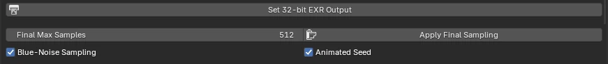
Sets the sampling the analyzers measure against. Press it first.
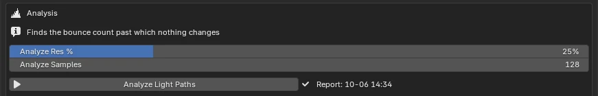
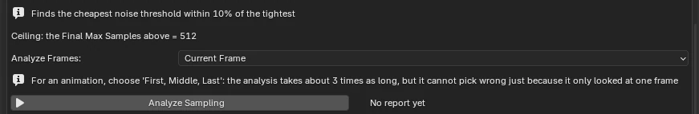
Analyze Light Paths and Analyze Sampling render your saved .blend in a separate Blender.
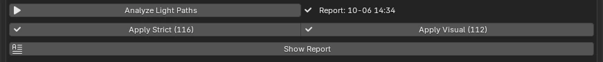
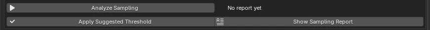
Apply Strict or Apply Visual for bounces; Apply Suggested Threshold for noise. Each asks first.
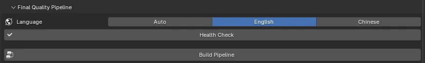
The whole denoise tree, in front of your own compositor chain.
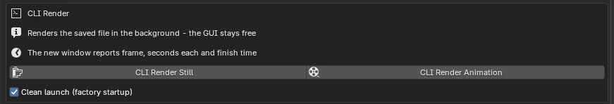
Render as usual, or hand it to a second Blender and keep working.
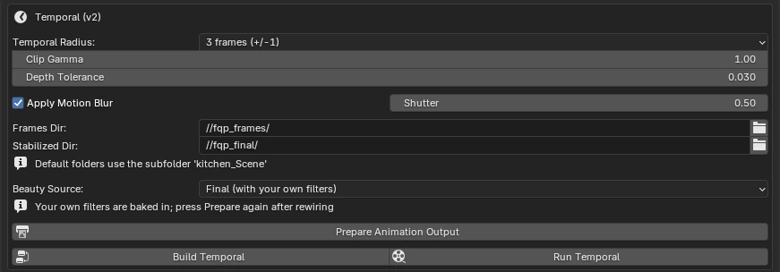
For locked-off or slow shots: steadies what the denoiser guesses differently on each frame.
It’s the same denoiser Cycles uses, fed more carefully: every light pass is denoised on its own, in full HDR, guided by albedo and normals. Measured against high-sample references in a product shot and a kitchen interior, FQP and the built-in denoiser come out level: the difference is smaller than the noise left in the reference.
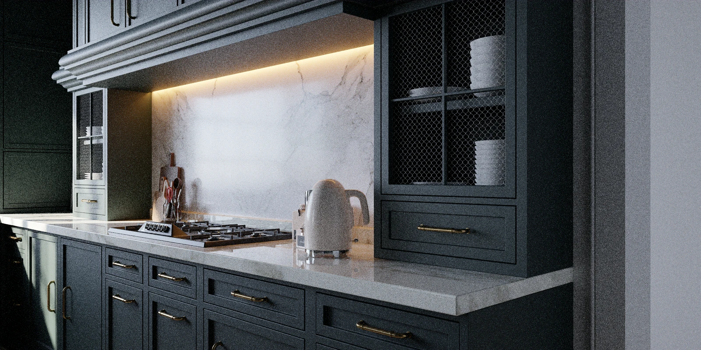
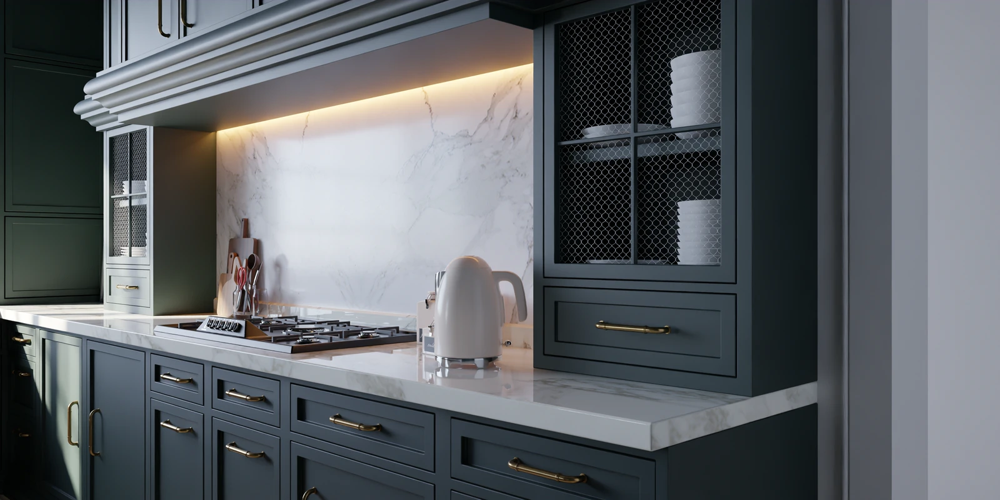
64 samples: no denoise on the left, FQP on the right. One scene, measured once. It stands for that scene only.
I spent days measuring FQP against Cycles’ own denoiser. Try to find a difference. I couldn’t measure one.
Same 64 samples, next to a high-sample reference. One scene, measured once. It stands for that scene only.
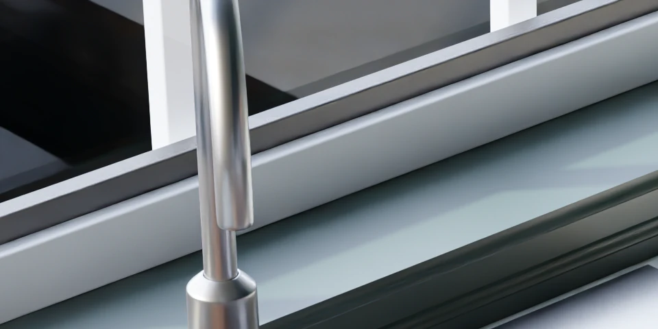
Remix Highlights Only: On 4× crop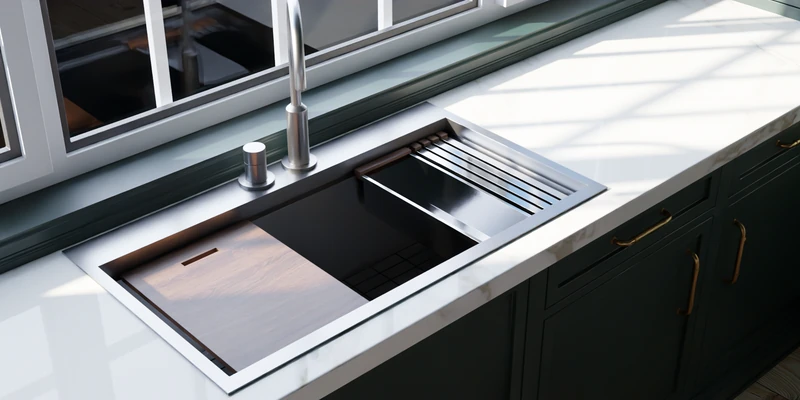
What FQP adds is control. The Denoise Strength sliders set how much of each light pass is denoised, and with Remix Highlights Only (on by default) they keep grain in the brightest areas while the rest of the frame stays clean. In an ordinary-brightness scene you may see nothing change when you drag them. That’s expected.
One scene, measured once. It stands for that scene only.
03 — CLI Render
Know when it’ll finish
For long renders, skip F12. CLI Render Still and CLI Render Animation hand the job to a second, headless Blender. Your UI holds none of the VRAM and stays usable, and you can even close it; the render carries on. For an animation, the console prints one line per frame, then a summary. From a real 48-frame render of a kitchen scene:
[FQP] frame 12/48 done | this frame 13.9s | avg 14.1s/frame | 36 left ~= 8m 28s | finishing 18:45 ... [FQP] 48 frame(s) done | 11m 24s in total (start-up and scene loading included) | avg 14.1s/frame [FQP] fastest 13.5s | slowest 17.4s
From a real 48-frame render
The estimate keeps recomputing from the running average, so if the back half of your shot gets heavier, the finishing time gradually admits it. Resume with Overwrite off and the count covers only the frames still left to render. Two catches: it renders the copy on disk, so save first; and a GPU fits one render at a time, so don’t press F12 as well.
04 — Animation
Animation
A denoiser guesses slightly differently on every frame, and playback shimmers. On a locked-off or slow-moving camera, Run Temporal steadies it: it warps neighbouring frames onto the current one along motion vectors, drops the pixels whose depth doesn’t match, and averages the rest. On a fast dolly or pan, the outline of an object moving across the background can come out slightly worse than without it, so it’s a per-shot choice.
Kitchen · locked-off camera · 46 frames · One scene, measured once. It stands for that scene only.
Motion blur sits out the render and comes back at the end as Vector Blur.
Prepare Animation Output, render as usual, Build Temporal, Run Temporal. The expensive render stays on disk. Only the cheap part repeats.
05 — Fine print
What it is not
- Not a quality jump. It’s Cycles’ own denoiser underneath. See the first FAQ.
- Not mainly a way to render faster. With every surface bounce at its highest, my kitchen scene rendered at most about 9–11% slower than at Blender’s factory values, and a foliage scene about 6% (one RTX 4090, not a promise). Volume bounces are the exception: they cost a lot. What the analysis buys is knowing, and that includes knowing you were already fine.
- Not instant on heavy scenes. 1.3 limits textures to 1K during the analysis only, and on the one scene I measured that doesn’t fit in graphics memory, 21 min 13 s became 3 min 59 s. Scenes that already fit don’t get faster.
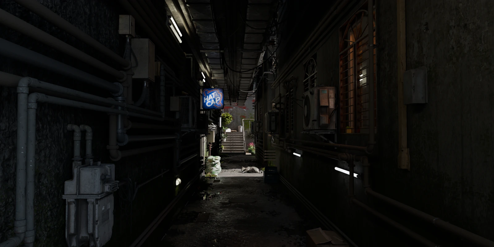
The scene in question · 2.5 GB · 836 textures - Analyzer limits. Motion blur isn’t rendered during analysis, and custom lens cameras (OSL lens add-ons) can’t be read for depth of field. Judge those shots yourself.
- Run Temporal limits. Consecutive frames only. On a turntable-style shot (object turns, lights stay still) it can come out worse than per-frame denoising. The manual has the measurement.
- Cycles only.
Also in the box: Health Check (read-only diagnostics: it points, it doesn’t touch), 32-bit EXR output, and an English / Traditional Chinese UI.